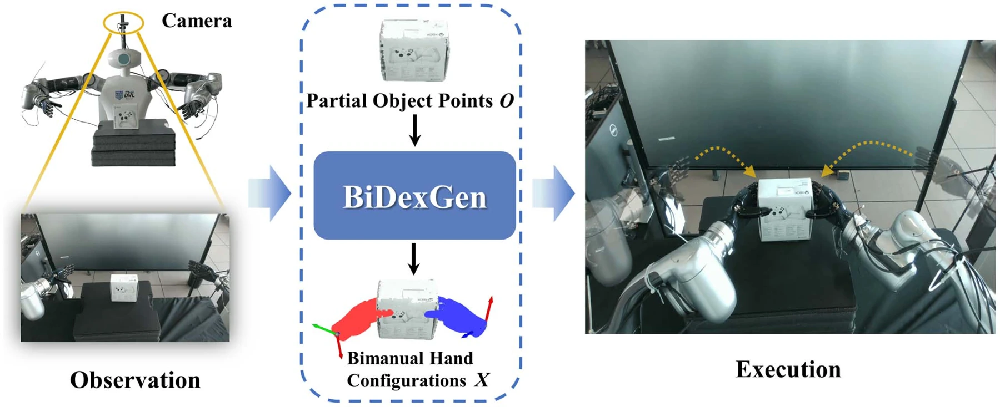

IEEE RA-L · 2026 / 第一作者论文
BiDexGen
从局部观测到 双手协同抓取
物体只能看到一部分，两只灵巧手该如何配合抓稳？这项工作将抓取数据合成与扩散模型连接起来，让机器人从局部点云生成双手抓取配置，并完成实机验证。

01
我做了什么
数据与生成模型
实现单手抓取优化、双手配对与物理验证流程，构建训练数据；完成局部点云条件下的扩散模型训练与实验评估。
感知与实机集成
打通点云感知、抓取候选筛选与运动执行，将模型输出转化为两只机械臂与灵巧手可执行的抓取。
02
把问题分成三步
点击切换，查看每一步的关键思路与论文原图。

先生成单手，再组合双手
直接优化两只手，搜索空间大、生成代价高。先分别优化左右手，再组合候选，将双手协调约束放在筛选和验证阶段处理。
- 生成候选
- 优化左右手的位姿、关节与接触。
- 筛选组合
- 去除双手穿透与不合理的相对配置。
- 物理验证
- 检验物体在接触与外力作用下是否稳定。


03
让生成的抓取真正执行

感知、筛选、执行
从深度相机观测中分离目标点云，生成双手抓取候选；剔除环境碰撞与运动规划不可行的配置，再控制双臂接近、合拢并同步抬升物体。
平台：两台 Diana-7 七自由度机械臂，搭载两只六驱动自由度灵巧手。
04